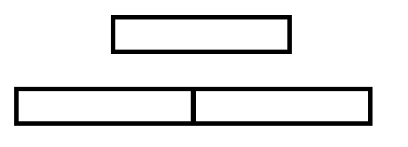

lzqy_ の Strings Round 赛后总结
A 好奇心宝宝
https://www.luogu.com.cn/problem/P10270?contestId=155684
题目大意：给一个网格，求两条从左上到右下的路径满足最长公共前缀最短，输出最短公共前缀长度。
做法
显然等价于找 $\{(x,y)|x+y=t\}$ 中最小的 $t$ 满足这个集合中的点的字符集大小 $>1$ 。
1 |
|
B 漫长悄悄话
https://www.luogu.com.cn/problem/P10270?contestId=155684
题目大意：对于 $i,j$ ，贡献为 $i,j$ 前缀的翻转和后缀的 $LCP$ （四个串的 LCP ），求最大贡献。
做法
等价于找最长的奇数长度回文串满足出现了至少两次。
接下来各显神通了，可以马拉车+Hash，可以回文自动机，也可以Hash+二分。
我用了回文自动机。
Hash+二分的做法详见官方题解：https://www.luogu.com/article/sfxeve97。（需要用到本质不同的回文串只有至多 $n$ 个的性质）
1 |
|
C 在四方城外
https://www.luogu.com.cn/problem/P10272?contestId=155684
题目大意：每次操作在 $S$ 后面添加 $S$ 的 mxBd ，求第 $L$ 次操作和第 $R$ 次操作之间所有操作后的字符串长度之和。
我的做法
引理 1 ：若 $ST=TS$ ，则 $S,T$ 有相同的整周期。
若原串的 $mxBd=0$ ，则答案为 $|S|*(r-l+1)$ 。情况1：无Bd
若原串有最小整周期 $p$ ，那么每次添加的长度必然是：$|S|-p$ ，否则一定会出现下面的情况：  那么根据引理，原串存在更小的整周期，矛盾，证毕。 这里给一些例子：abababababcab 、aaaaaaaba 。 为了方便下面叙述，我们设 $S_m$ 表示第 $m$ 操作后的字符串，$S_0=S$ ，然后设 $T_m=S_m-S,T_m’=(mxBd(S)+T_m)$ ，字符串 $S-T$ 定义为 $S$ 删去 $LCP(S,T)$ 。 显然，$|T_{m+1}|-|T_{m}|=|T’_{m+1}|-|T’_{m}|$ ，$|T_{m+1}|-|T_{m}|\le |T_{m+2}|-|T_{m+1}|$ 接下来先说结论，整个增长过程可以分成两个部分，先是 $|T’_{m+1}|=2|T’_m|$ ，然后 $|T_{m+1}|-|T_m|$ 恒定。 定理 1 ：$|mxBd(T_{m})|\le |T’_{m}|$ 。（显然，归纳一下就行了） 因此，$|T’_{m+1}|\le 2|T’_m|$ 。 定理 2 ： $|T’_{m+1}|<2|T’_m|$ 时，则后面 $|T_{m+1}|-|T_m|$ 恒定。 设 $U=mxBd(T’_{0})$ 。 $T_{m}-T_{m-1},T_{m+1}-T_m$ 是 $S$ 的一个 Bd ，显然 $T_{m}-T_{m-1}$ 是 $T_{m+1}-T_m$ 的一个 Bd 。可以得到 $T’_{0}$ 是 $T_{m+1}-T_m$ 的一个 Bd 。 根据引理 $1$ 可以得到 $U$ 是 $T_{m+1}-T_{m}$ 的最小整周期。 这个时候，可以把 $T’_{m+1},T’_{m}$ 等字符串想象成若干 $U$ 的拼接，显然 $U$ 也是 $T’_{m+1}$ 等字符串的最小整周期，否则最小整周期也是 $U$ 的整周期，与前面矛盾。 则 $|T’_{m+1}|<2|T’_m|$ ，就已经说明了 $S_{m}$ 前面只有 $\frac{|T’_{m+1}|}{|U|}$ 个 $U$ ，没有 $\frac{|T’_{m+1}|}{|U|}+1$ 个 $U$ ，若 $|T_{m+2}|-|T_{m-1}|>|T_{m+2}|-|T_{m-1}|$ ，则与 $U$ 的个数矛盾，证毕。 定理 3 ：若 $|T’_{m+1}|=2|T’_m|$ ，那么 $|T_{m+1}|-|T_{m}|<|S|$。 反证法，若 $\ge n$ 。 显然 $T’_{0}$ 是 $T_{m+1}-T_{m}$ 的一个周期，即 $S_{m}$ 一个 $\ge n$ 的 Bd 的周期是 $T’_{0}$ ，注意到 $T’_{0}$ 也出现在 $S$ 的末尾，根据引理 $1$ 知道 $S$ 有整周期，矛盾，证毕。 推论： $m=\left \lfloor \log_2{|S|} \right \rfloor+1$ ，则一定有 $|T’_{m+1}|<2|T’_m|$ 。 于是就有很多种搞法了。 我的方法是直接 Kmp ，注意到长度 $\le 3n$ ，所以时间复杂度为：$O(n\log{n})$ ，空间复杂度为 : $O(n)$ 。 当然，根据上面的证明，有更加快速的搞法：求出 $U$ ，然后从左到右找至多有多少个 $U$ ，这样就可以在 $O(n)$ 的时间解决这个问题了。情况2：有整周期
情况3：无整周期但有Bd
证明
证明
注意：上面的时间复杂度都忽略了快速幂计算答案的时间。
综上，时间复杂度为：$O(n\log{n}+\log{R})$ ，空间复杂度：$O(n)$。
当然，时间复杂度可以优化到：$O(n+\log{R})$ 。
1 |
|
感觉想出这个做法非常花时间啊。
官方题解
官方做法和我的 $O(n)$ 做法没什么区别，区别在于官方题解导出正解的路线非常短。
想想怎么更快的想出正解？
- 首先注意到 $S$ 有整周期（简单的）和没有整周期（不简单的）是两种情况。
- 其次一个必要条件是足够快的想出引理 $1$ （我的做法有提到）。
- 然后要有足够的观察力观察到如果设 $U$ 是 $mxBd(S)$ 的最小整周期，那么 $U$ 是这个问题的关键。
- 需要观察到 $U$ 是每次添加的字符串的整周期（那么显然 $U$ 是最小的整周期），否则可以证明 $mxBd(S)$ 存在更小的整周期。
- 设 $l$ 是从左到右 $S$ 可以匹配上的 $U$ 的个数，$r$ 是从右到左的，如果 $(l+r-1)*|U|\ge |S|$ ，则可以说明 $S$ 有最小整周期，矛盾。
- 根据 $4,5$ 就可以得到 $O(n)$ 做法，也可以根据至多 $O(\log)$ 后增速固定，且在这之前字符串长度至多乘 $3$ 倍的性质，想出更加好写的 $O(n\log{n})$ 做法。
观察上面过程，在第 $3$ 步之后对我而言比较自然，也就是想要更快的做出这题，更快的想出第 $2,3$ 步是关键。
D 大娱乐至上
题目链接：https://www.luogu.com.cn/problem/P10273?contestId=155684
题目大意：给你一个字符串，给一堆区间代表子串，问你每个区间能不能在只改变原串一个字母的情况下，使原本给出的小于它的子串现在大于等于它了。
我的做法
我考场的第一想法是后缀数组，但非常可惜的是太过答辩，以至于我根本没有时间在考场上品鉴完。
一个简单的思路是：要么改变这个子串，变小一个字母。要么让其余所有原本小于它的给定子串变大，变大一个字母。
基础实现思路：从小到大遍历子串，然后讨论当前这个子串是否可行，如果有多个相同的子串，则同时进行查询即可（即全部询问完后再执行相应的修改操作）。
然后就可以开始讨论了：
不妨设现在考虑的是 $[l_i, r_i]$ ，下面不加说明时，都仅考虑原本小于它的子串 $[l_j, r_j]$ ，设 $lcp(x,y)$ 表示 $x,y$ 后缀的最长公共前缀，同时下面提到的子串都指题目给定的子串。
变小一个字母（一个基本性质是所有子串只可能变小不可能变大）：
- 显然，如果要让 $[l_i, r_i]$ 小于等于 $[l_j,r_j]$ ，设 $len = min(lcp(l_i, l_j), r_j - l_j + 1, r_i - l_i + 1)$ ，则显然改的字符必须落在 $[l_i, l_i + len - 1]$ 。
- 同时如果改的字符同时落在 $[l_i, r_i]$ 和 $[l_j, r_j]$ ，那么显然必须有：$l_i > l_j$ ，即如果有 $l_j \ge l_i$ 的话，修改的位置不能在 $[l_i,r_i]\cap [l_j,r_j]$ ，同时根据上一条可以知道，修改的位置不可能在 $l_j$ 之后，即落点只能落在 $[l_i, l_j - 1]$ 。（可以发现，找到右边最近的 $l_j$ 给个约束就行了，可以用单调栈预处理达到 $O(n)$ ）
这样就可以得到修改的位置必须落在的区间，而且根据上面的讨论，不难发现只要落在这个区间，直接改到 $<a$ 就可以符合要求了，即这个区间有可改的位置是改小可行的充要条件。
现在问题是，第一点怎么实现？
假设小于等于 $[l_i,r_i]$ 的子串（包括自己）中 $l$ 后缀 rank 最大为 $k$ ，同时所有给定的字符串中 rank 最小的 $l$ 的 rk 为 $smallrk$ 。
那么第一点的限制可以写成 $min(lcp(sa[smallrk],l),r_{j}-l_{j}+1(\forall j : [l_j,r_j]\le [l_i,r_i]))$ ，这样就可以维护了，具体实现中，还可以将 $lcp(sa[smallrk],l)$ 换成 $lcp(sa[k],l)$ ，因为显然 $lcp(sa[smallrk],sa[k])\ge min(r_{j}-l_{j}+1(\forall j : [l_j,r_j]\le [l_i,r_i]))$ 。
可以在询问的过程中一起维护，时间复杂度 $O(n)$ 。
变大一个字母（一个基本性质是所有子串只可能变大不可能变小）：
- 需要让这个位置落在所有 $[l_j,r_j]$ $([l_j,r_j]<[l_i,r_i])$ 。（很容易 $O(n)$ 处理）
- 如果要让 $[l_i, r_i]$ 小于等于 $[l_j,r_j]$ ，则显然改的字符必须落在 $[l_j, l_j + lcp(l_i, l_j)]$ 。
- 如果要让 $[l_i, r_i]$ 小于等于 $[l_j,r_j]$ ，则显然改的字符必须落在 $[l_j, l_j + (r_i - l_i + 1) - 1]$ 。（很容易 $O(n)$ 处理）
- 若 $\exists j : l_j \le l_i ,[l_j,r_j] <[l_i,r_i]$ ，则显然修改位置不能落在 $[l_i,r_i]$ ，否则 $[l_i,r_i]$ 的增大程度大于 $[l_j,r_j]$ 。（很容易 $O(n)$ 处理）
这样就可以得到修改的位置必须落在的区间，而且根据上面的讨论，不难发现只要落在这个区间，直接改到 $>z$ 就可以符合要求了，即这个区间有可改的位置是改大可行的充要条件。
现在问题是，第二点怎么实现？毕竟 $rk[l_i]$ 可以跳上跳下的 ，因此维护 $lcp(l_i,l_j)$ 是个很困难的事情。
假设大于等于 $[l_i,r_i]$ 的子串（包括自己）中 $l$ 后缀 rank 最大为 $k$ 。
那么实际上只需要考虑 $j:[l_j,r_j]<[l_i,r_i],rk(l_j)<k$ ，且 $lcp$ 只需要考虑 $lcp(l_j,sa[k])$ ，原因是这样子改的影响一定可以被其余三点消掉。（一个基本的事实是：若 $rk[l_i]\ge rk[l_j]$，但 $[l_i,r_i]\le[l_j,r_j]$ ，那么 $[l_i,r_i]$ 一定是 $[l_j,r_j]$ 的前缀）
这样子的好处是可以用一个栈轻松实现这个过程。
综上，在对子串排序后，所有的讨论都可以在线性的时间解决。
时间复杂度：$O(n\log{n})$
空间复杂度：$O(n\log{n})$
我的代码实现细节和上述实现不完全相同，但是思路是一致的。
1 |
|
能不能再快一点？空间能不能再小一点？
答案是可以的，首先后缀数组换成 SA-IS ，但即使换成 $O(n)-O(1)$ RMQ 排序也要 $O(n\log{n})$ ，如何处理呢？
注意到一个事情，排序的时候只关注子串是什么，而不关注子串的位置，因此只要我们能给每一个子串，找到最小的以该子串为前缀的后缀即可，做法也很简单：
将 height 从大到小跑，然后用并查集维护连接起来的一块，然后每次把一个子串送到所在连通块中排名最小的后缀即可。
这样就能在 $O(n\alpha(n))$ 时间排序完毕，再算上 $O(n)$ 的讨论，理论上能做到的最优复杂度：
时间复杂度：$O(n\alpha(n)))$
空间复杂度：$O(n)$